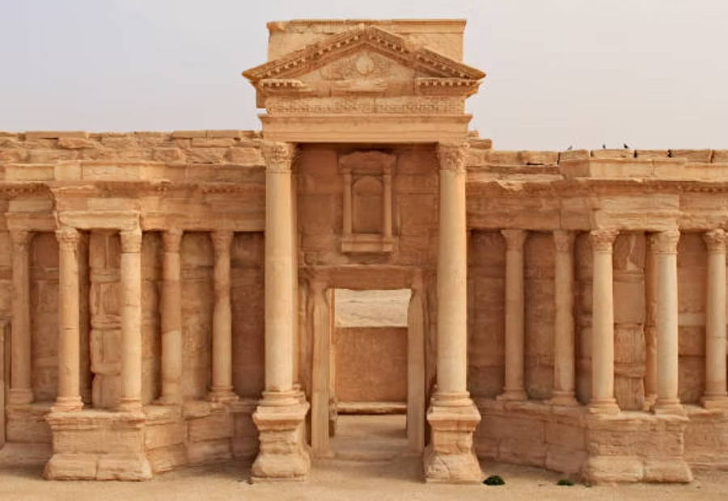
01
A living library
Eras, figures, cities and culture — written by the people who study them.
Browse the eras →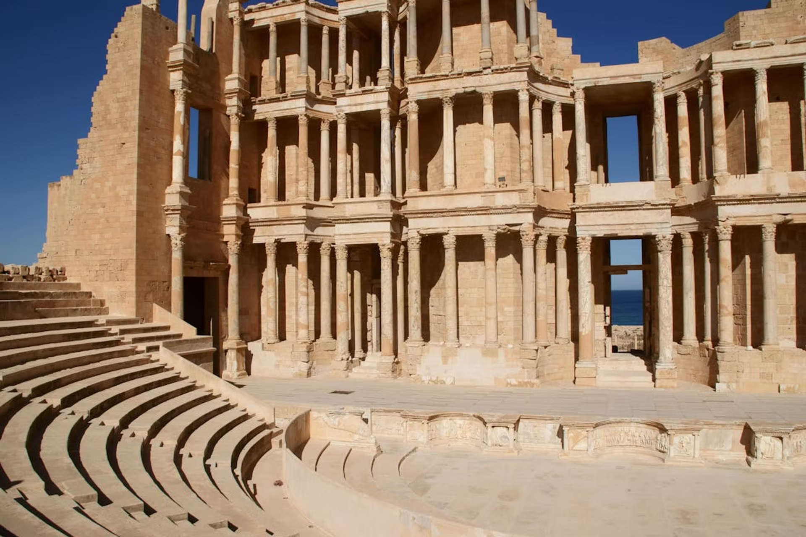
Heritage travel · Libya
Two thousand years of Greek, Roman and Saharan history — and the expert-led journeys that take you there.
Roman theatre, Sabratha — UNESCO World Heritage
ScrollHeritage travel · Libya
Greek cities, Roman capitals and Saharan kingdoms — researched in depth, and travelled with experts who know the ground.
Issue 01 — The Pentapolis & the coast
Heritage travel · Libya
A library of Libya's eras and the expert-led journeys that take you to them.
Plate I — Roman theatre, Sabratha, 2nd century CE
Why HistoricLibya
We research Libya's past in depth — then take a small number of travellers to stand inside it.
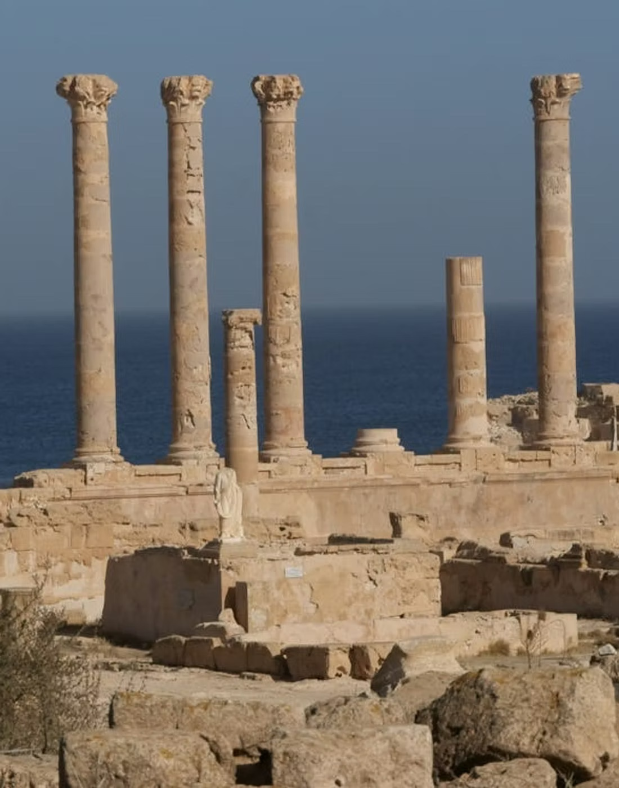

Eras, figures, cities and culture — written by the people who study them.
Browse the eras →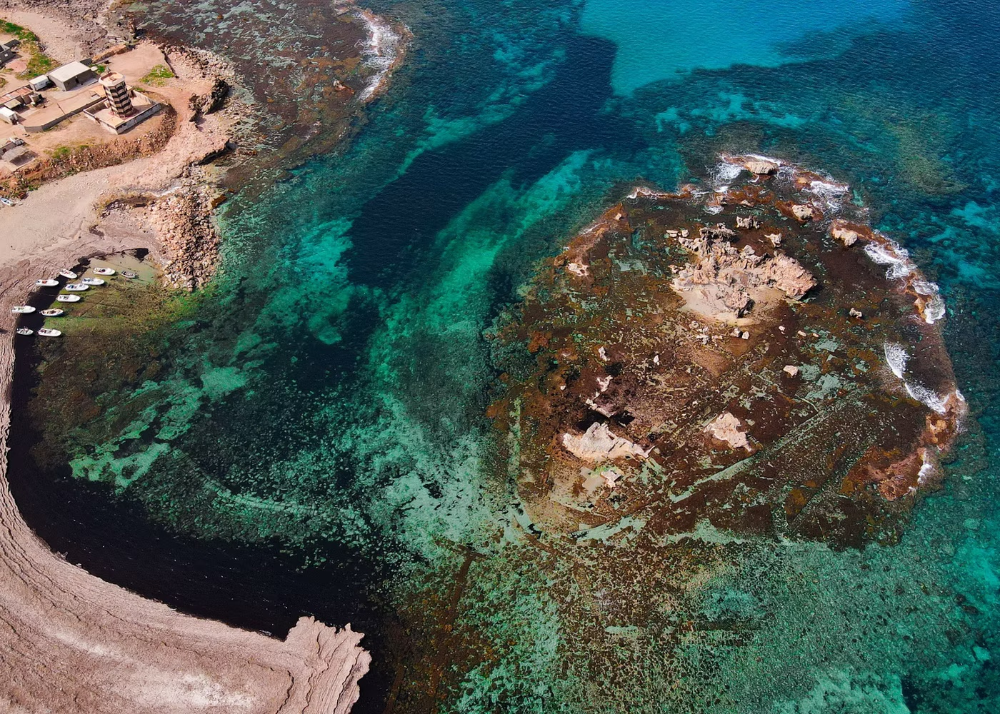
Journeys guided by archaeologists and Libyan hosts who turn ruins into stories.
See how we travel →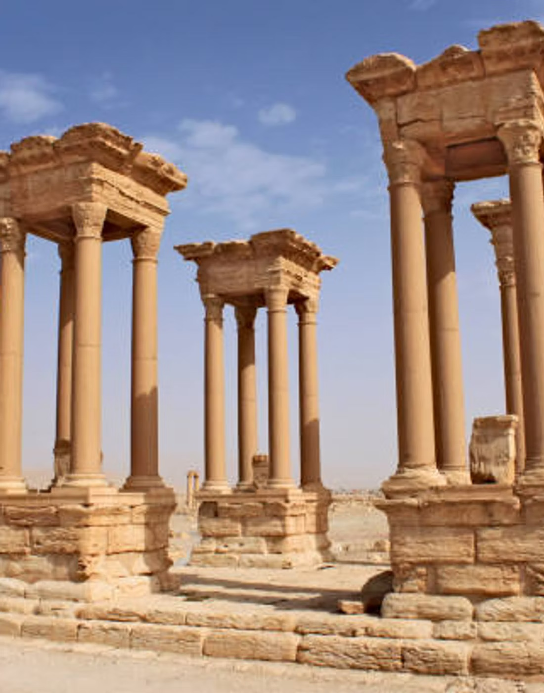
Visas, permits and security — arranged end to end, so you simply turn up and look.
Visa & practicalities →A timeline of Libya
From Saharan rock art to the Garamantes, the Greek Pentapolis, Roman Africa and the present day. Drag, or use the arrows.
Green-Sahara hunters and herders leave rock art across the Acacus mountains.
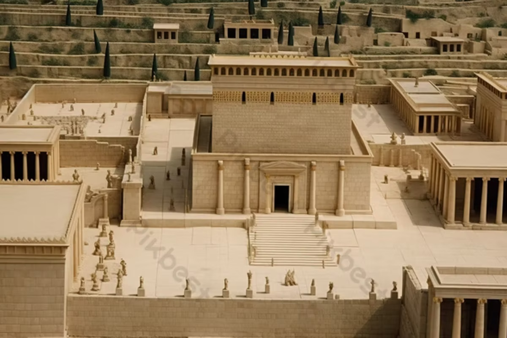
02A desert civilisation farms the Fezzan with underground irrigation tunnels.
Tyre's traders found Sabratha, Oea and Leptis — the three cities of Tripolitania.
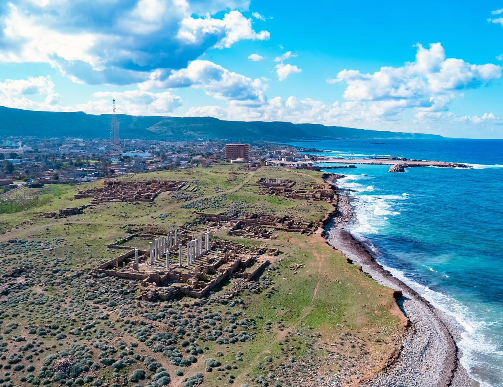
04Settlers from Thera build Cyrene and its Pentapolis above the eastern sea.
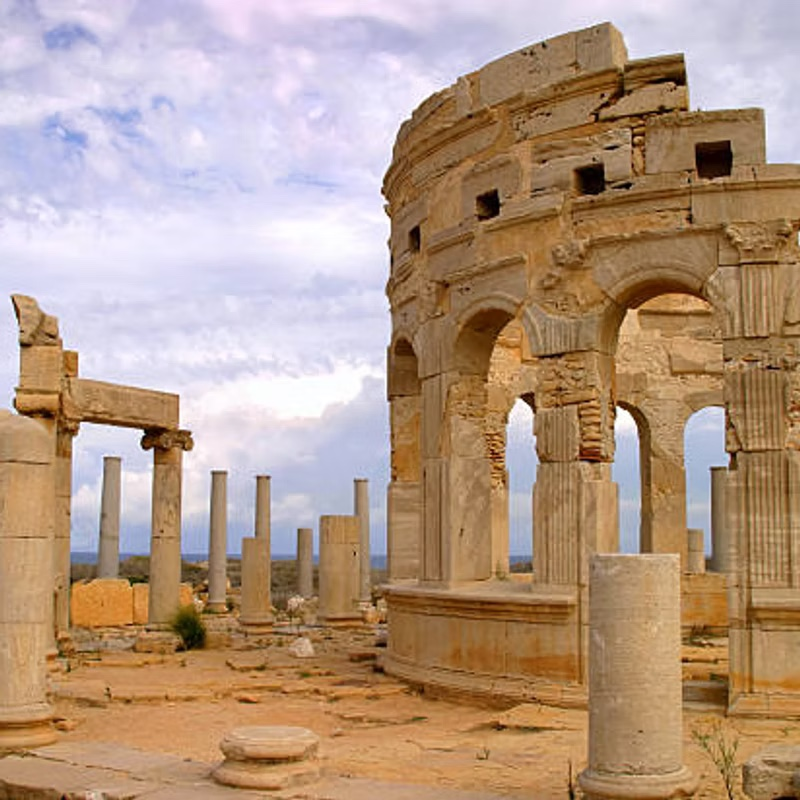
05Leptis Magna becomes one of the empire's grandest cities under a local emperor.
Arab conquest brings Islam, trans-Saharan trade and a new architecture of light.
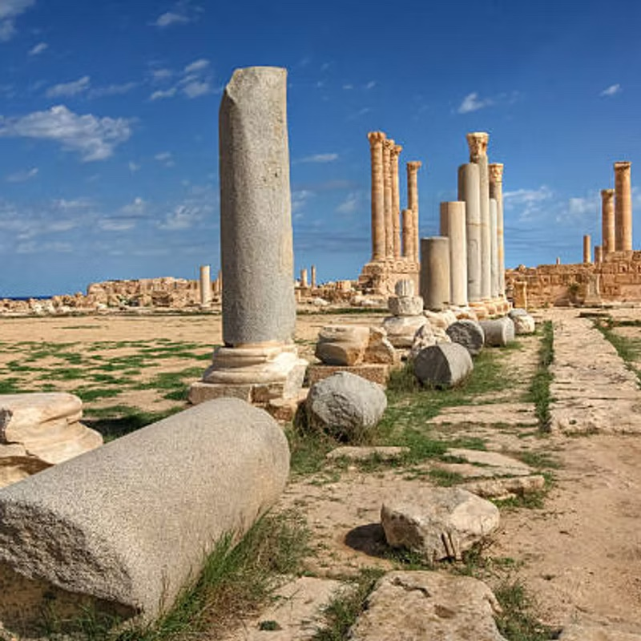
07Tripoli joins the empire; the Karamanli dynasty later rules it near-independently.
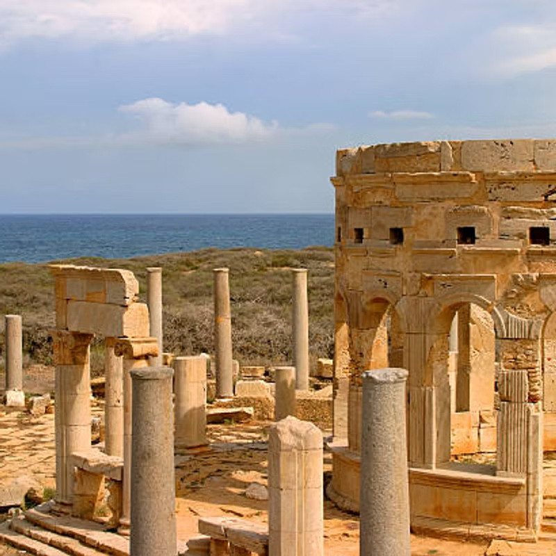
08Colonial occupation and the resistance led by Omar al-Mukhtar.
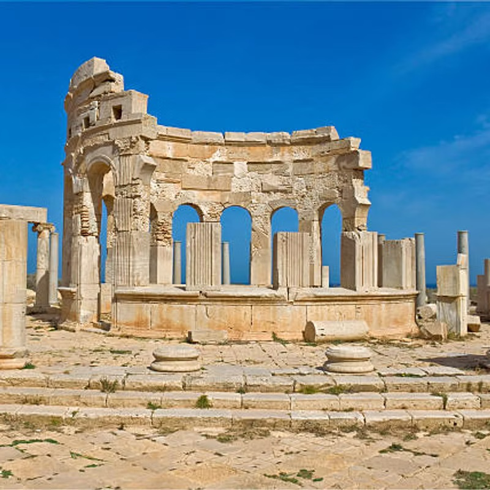
09The Kingdom of Libya is founded under Idris I; oil is discovered in 1959.
Revolution, oil and the slow, careful reopening of an extraordinary country.
Sites & cities
Three UNESCO World Heritage sites, a Greek port and a desert town — each one a chapter you can walk through.
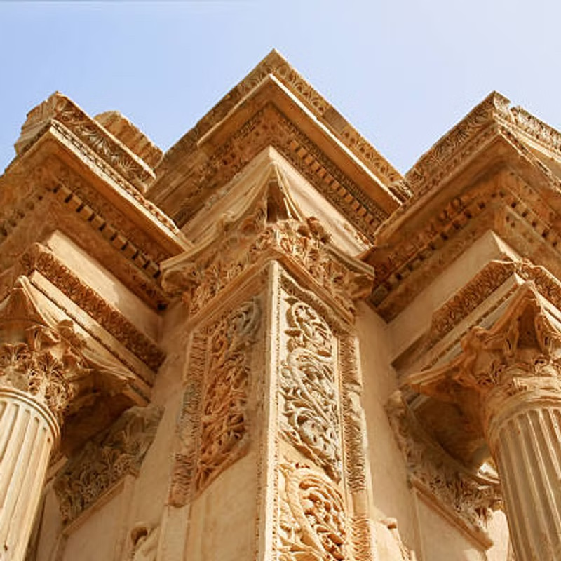
The best-preserved Roman city in the Mediterranean — forum, basilica and the great arch of its home-grown emperor.
Explore the city →A three-storey theatre facing the sea, on a Phoenician trading city older than Rome.
Explore the city →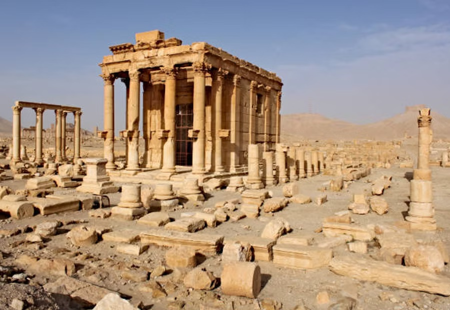
The greatest Greek city in Africa, high above the eastern sea.
Explore →Cyrene's harbour, its quaysides now half-drowned by the Mediterranean.
Explore →A covered oasis town of whitewashed alleys on the edge of the Sahara.
Explore →Key figures
Emperors, generals, kings and resistance leaders — Libya's story told through the lives that turned it.
Roman Emperor, born at Leptis Magna
145 – 211 CE
Carthaginian general of the Punic Wars
247 – 183 BCE
Libyan-origin Pharaoh of Egypt
r. c. 943 BCE
Pasha of Tripoli
1766 – 1838
Leader of the Libyan resistance
1858 – 1931
Founder of the Senussi order
1787 – 1859
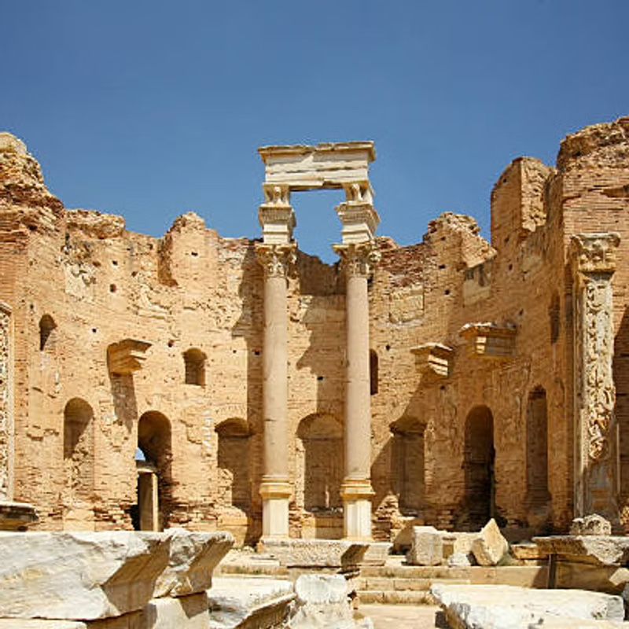
First King of Libya
1889 – 1983
Browse the full biographical index
View all →
Travel with us
Small-group and private journeys, led by archaeologists and Libyan hosts. We handle the visa, the permits and the security so you can give your attention to the ruins.
From the journal
Before the heat and the light goes flat, the marble of the Severan forum turns the colour of honey. Here is what to see first.
Read article →How a desert people moved water through hundreds of kilometres of hand-dug tunnels — and built cities where none should stand.
Read article →Visas, entry points, what is open and what is not. An honest, current account of travelling to Libya as a visitor.
Read article →